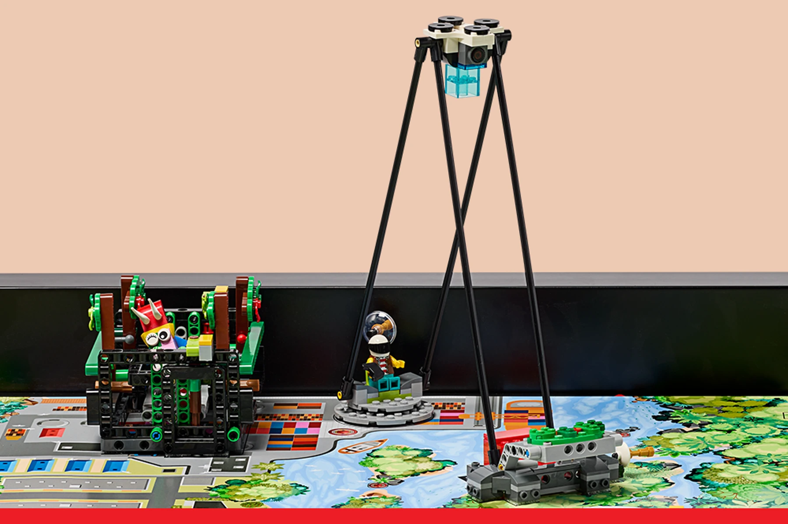

Discovery
Explore new skills and ideas. A student learns a new SPIKE technique or improves a research question after finding better evidence.
Judges look for these in the work itself. The useful evidence is a real decision, test, disagreement, revision, or contribution—not a memorized speech.
Explore new skills and ideas. A student learns a new SPIKE technique or improves a research question after finding better evidence.
Use creativity and persistence. The team compares two mechanisms or prototypes, learns from failure, and tries again.
Apply what we learn to improve the world. The project defines who or what benefits and how improvement could be measured.
Respect differences. Students rotate technical work, invite quieter ideas, and include perspectives affected by the project.
Work better together. Coding and mechanism groups test the integrated run and solve the actual failure instead of blaming each other.
Enjoy and celebrate the work. Students choose some problems they genuinely want to solve and recognize measurable progress.

Every match starts at Accomplished (3). A referee changes it only for observed above-and-beyond behavior—Exceeds (4)—or behavior below the expected standard—Developing (2).
A team that cannot run the robot can still be evaluated by showing up, explaining the situation, respecting the volunteers, and working constructively.
Coopertition: help and cooperate with other teams even while competing. The M05/M07 cross-table interaction is a practical place to coordinate without depending on the bonus for our baseline score.